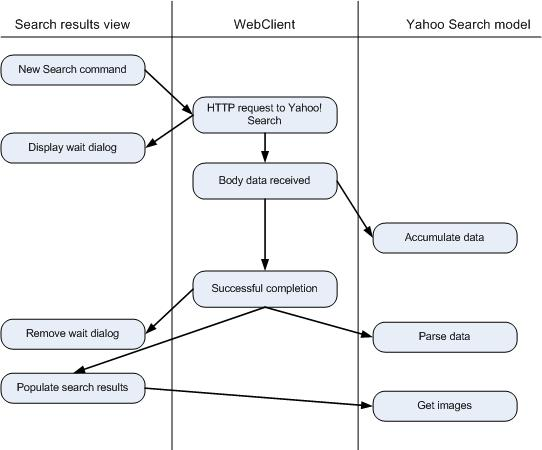

Tutorial: Yahoo! Image Search
This example shows how to use the Carbide.c++ UI Designer for S60 to
define the UI of an application and to implement the "real work" in the
generated code.
The application consists of two screens. The main screen prompts the user to to initiate a search and
displays the list of search results. The second screen displays the Yahoo! provided thumbnail image of
the selected result.
Choose a link to read the following topics:
Editing generated source to provide application logic
So far, we've introduced:
- The search results view that initiates the search process, owns the list box and the
non-layout components.
- The image container view that displays the selected thumbnail image
- The web client object that handles the search request to Yahoo! via HTTP GET
- The CYahooSearchModel object that parses the results and builds an array of search results
The diagram below shows, in simplified form, the activity involved in performing an image search.

Figure 1 - Activities performe during an image search
Next we'll look at how this behavior is accomplished in Carbide.c++.
- The searchPrompt object is the data query object used to prompt the user for the
search string. The UI Designer generates the RunSearchPromptL() method which invokes the query.
- An event handler named HandleNew_searchMenuItemSelectedL() has been bound to the
"New Search" menu item's event handler. The code in this method invokes the searchPrompt
query. It invokes the UI Designer-generated method IssueHTTPGetL() method. A dynamic URL
is used because the search text must be included in the URL.
- The wait dialog is handled with the webClient's automatic wait dialog handling.
When its 'wait dialog' property is set, the wait dialog will be shown and removed automatically.
Note that the property editor can create a wait dialog on the fly.
- The webClient object will repeatedly send fire the bodyReceived event when text
is available. The event is handled in the HandleWebClientBodyReceivedL() method. Note that
this method is set up to handle two cases: a search query, or reading image data. In the case
of a search query, the data is passed to the CYahooSearchModel object, which accumulates
incoming data into a buffer.
- Upon successful completion the transactionSucceeded event is handled in the
HandleWebClientTransactionSucceededL() method. This method tells the search model to parse
the results and invokes the view's PopulateSearchResultsL() method.
- The PopulateSearchResultsL() method requests image information from CYahooSearchModel.
It populates the list box with an entry for each search result, showing the name and URL of each image.
On the next page we will show how the image is downloaded and displayed.